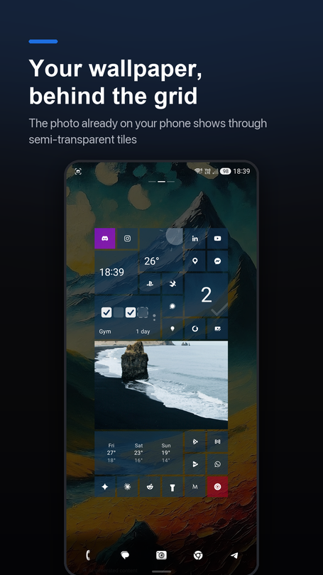
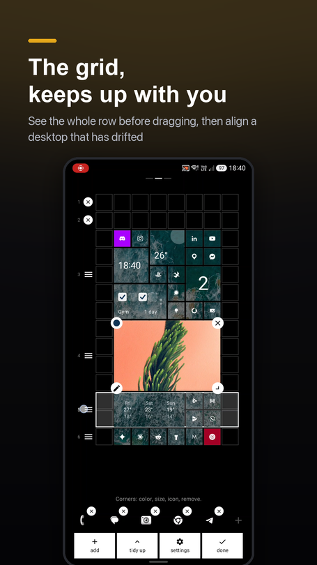

The launcher stops hiding your wallpaper
1.4.4 puts your system wallpaper behind the grid, adds live slider previews and finishes the row model with Align.
The launcher stops hiding your wallpaper
What ships. Background gets a third option next to black and white: the wallpaper you already have set on your phone. Not an import, not a new picture to choose — the one you picked before you ever installed a launcher.

A launcher that paints a solid rectangle over your entire screen takes away the wallpaper you picked before it ever showed up. Installing sqTile read as losing something. The window was already flagged to draw behind the system bars — that groundwork existed already — so the whole feature was mostly about no longer painting over it: the window background goes transparent unconditionally now, because it is decided the moment the window is created, before the setting has even loaded from disk.
The existing black-or-white toggle keeps every bit of its old job. Over a wallpaper it stops meaning "which flat colour" and starts meaning "which colour to veil the photo with" — which is exactly the value the contrast math elsewhere in the app already reads, so nothing downstream had to change to make it work.
Text, icons and badges stay fully opaque no matter how far you push the transparency slider, because a launcher you can't actually read at the extreme end of a setting isn't a real setting — it's a decoration. The veil is free. Letting the wallpaper show through the tiles themselves is Pro.
New installs get the wallpaper on by default now. Existing installs keep their black background, on purpose, through a settings migration rather than a changed default — because a changed default would have repainted everyone's home screen in an update nobody asked for. The migration caught one real bug the night before release: restoring an older backup was quietly turning wallpaper back on anyway, because the backup file's missing field decoded to today's default instead of the old one. Fixed by bumping the backup format version and gating on it explicitly, so an old backup restores exactly as flat as it was saved.
Drag a slider, watch it happen live
What ships. Hold down a slider in appearance settings and the settings screen fades away, showing the real desktop underneath while the slider redraws itself at the bottom, still under your finger.

Adjusting how strong the veil should be, or how see-through a tile is, used to mean: close settings, look, reopen, nudge, repeat. That is a bad way to tune anything you're trying to feel rather than pick from a list. The feature works because the desktop was already composed underneath the settings screen the whole time — the screen was only ever painting over it — so the entire thing is transparency plus somewhere to redraw the slider. That is also its one hard requirement: it only works because both screens share a single container. Moving settings to its own destination in navigation would kill it outright.
Worth being honest about: the first version of this quietly did nothing at all, and no test caught it. Whether a slider was currently held was read as a value captured inside a coroutine's closure, so it worked exactly once, at the moment the effect first launched, and then never again for the rest of the session — invisible in every test, because the seam being tested was correct the whole time. Only running it on an actual phone showed the preview never firing.
The grid, finished
If you read the last post, 1.4.3 fixed how a drop resolves. This one replaces the model underneath it: one invariant, one owner, instead of four code paths that each quietly disagreed with the others about what a legal position even was.

The smallest tile is genuinely 1×1 now — no position is privileged over any other, which is what was quietly warping rows every time a small tile showed up next to something bigger. A held row handle now outlines the whole band of tiles it's about to move, before the first drag, instead of after. A dragged tile draws on top of whatever it's aiming for now — there wasn't a single zIndex anywhere in the file before, so a tile dragged up from the bottom of the screen always drew underneath the thing you were trying to hit. A new Align chip in edit mode tidies a desktop that has drifted — vertically only, nothing you deliberately placed gets reshuffled — and it's undoable like everything else in edit mode. And the size picker grows a pair of −/+ buttons that trim a tile narrower one unit at a time, instead of only offering a fixed ladder of shapes.
"How do I switch the weather to Fahrenheit?"
That question arrived by email from someone in the US. There wasn't an answer — the launcher had printed Celsius everywhere since its very first version, without ever asking. Not a missing option so much as a feature that didn't work for a chunk of the world.
Now there's a chip in settings with two choices, defaulting to whatever unit the phone's own country normally uses — not GPS, not IP, just the locale already set on the device — and a deliberate choice always overrides that default. Conversion happens at render time off one canonical value stored in Celsius, so switching costs a recompose, not a network round trip, and it still works with no signal at all.
Worth saying plainly: everyone with an existing install in a US locale will jump from °C to °F on update, without being asked first. That's the intended fix, not a side effect — but it's still a behaviour change for someone who never touched the setting.
Also in 1.4.4
- Dock background can be set to auto / visible / hidden — auto hides the bar over a wallpaper and shows it over a flat colour, since over a flat colour it was always painting the exact shade sitting behind it anyway.
- 364 unit tests now, up from 269 two releases ago.
What's next
Next up is 1.4.5, and it's deliberately boring on purpose: a Compose/AGP/Kotlin version bump, no features, the kind of release that doesn't get its own post. After that, 1.5.0 opens features back up again, starting with locking the app behind a PIN.
sqTile is on Google Play, in English, Polish, German, Italian and Ukrainian. Free, with a single one-time Pro unlock and no subscription. No ads, no analytics SDK, no account.